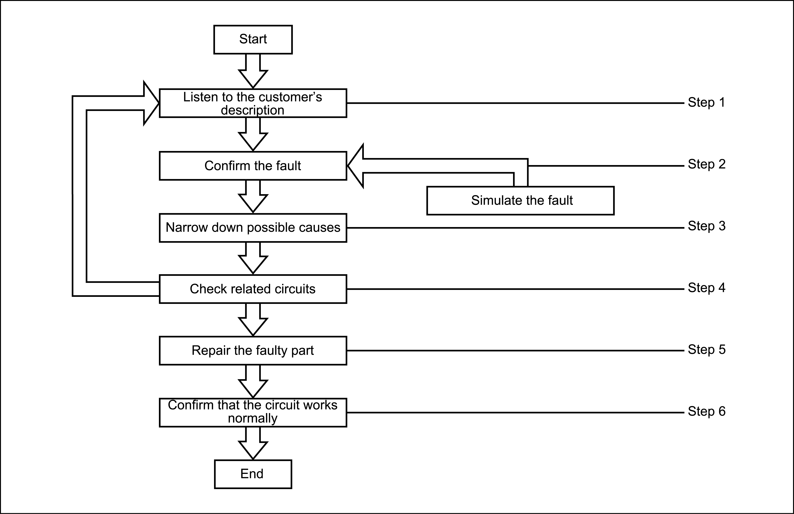

|
Step |
Instructions |
|
|---|---|---|
|
Step 1 |
Get detailed information about the relevant situation and environmental conditions when the fault occurs. The following key information helps to make a correct analysis: |
|
|
Vehicle and fault type |
Model and fault system |
|
|
When |
Date, time, weather conditions and frequency of occurrence |
|
|
Where |
Road conditions, altitude and traffic conditions |
|
|
Step 2 |
How |
System symptoms, operation status (influence of other components and parts), maintenance history and whether other accessories are installed after sales |
|
Step 3 |
Run the system, and carry out a road test if necessary. Confirm the fault parameters. If recurrence of the fault is impossible, please refer to "How to deal with intermittent faults". |
|
|
Collect appropriate diagnostic materials, including:
Determine where to start the work according to the customer's description and your knowledge. |
||
|
Step 4 |
Check the system for tangled wires, loose joints, damaged wires or other faults. Determine the circuits and parts involved in the fault, and perform diagnosis according to the system circuit diagram and the wiring harness layout diagram. |
|
|
Step 5 |
Repair or replace the faulty circuits or parts. |
|
|
Step 6 |
Run the system in all modes to ensure that the system works normally under all conditions and that no new faults are caused by carelessness during diagnosis and maintenance. |
|